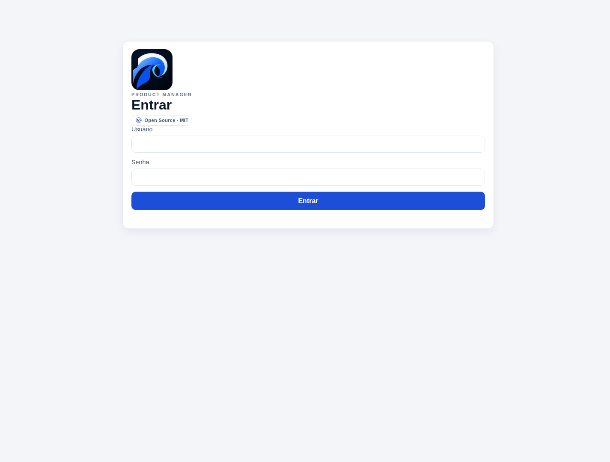
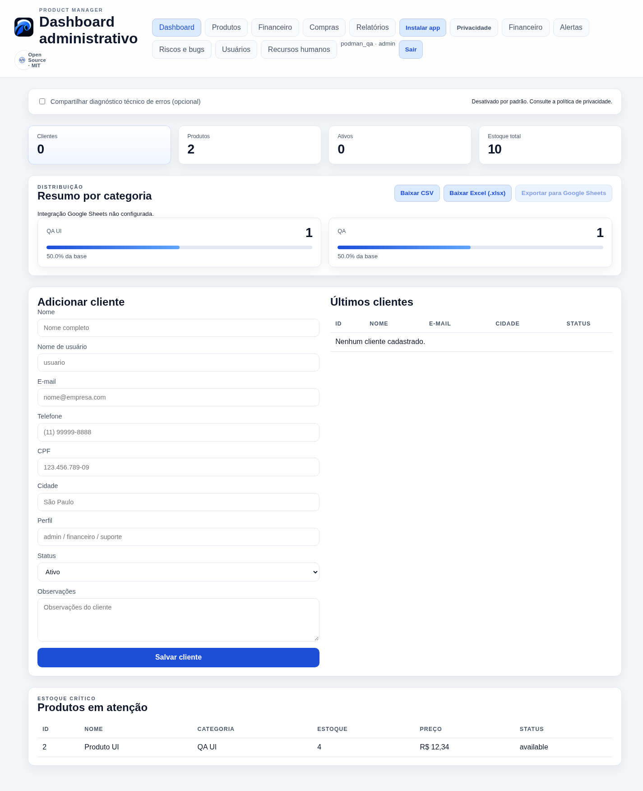
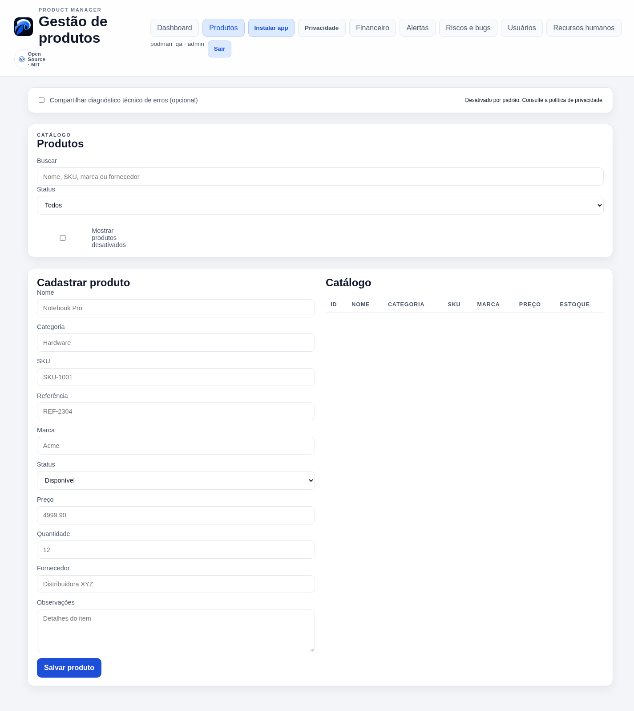
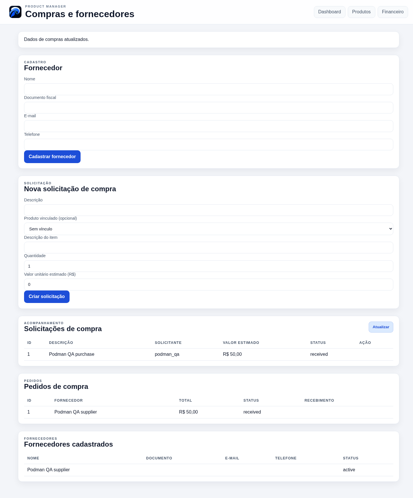
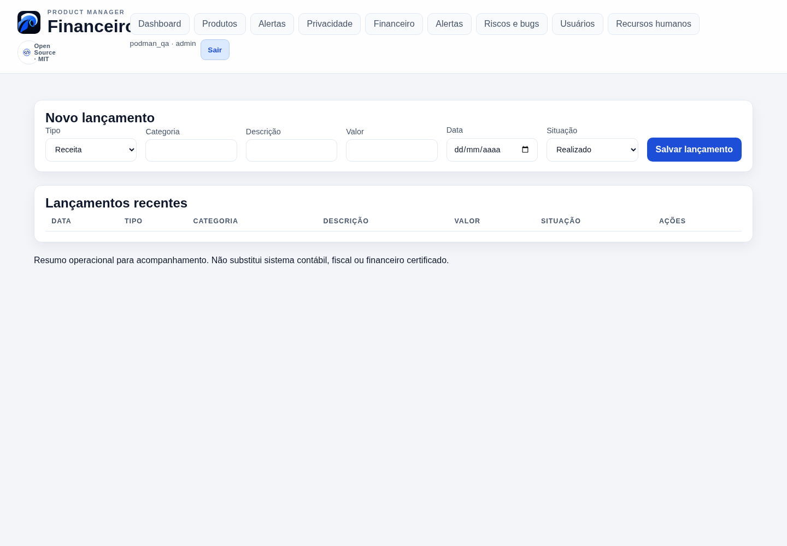
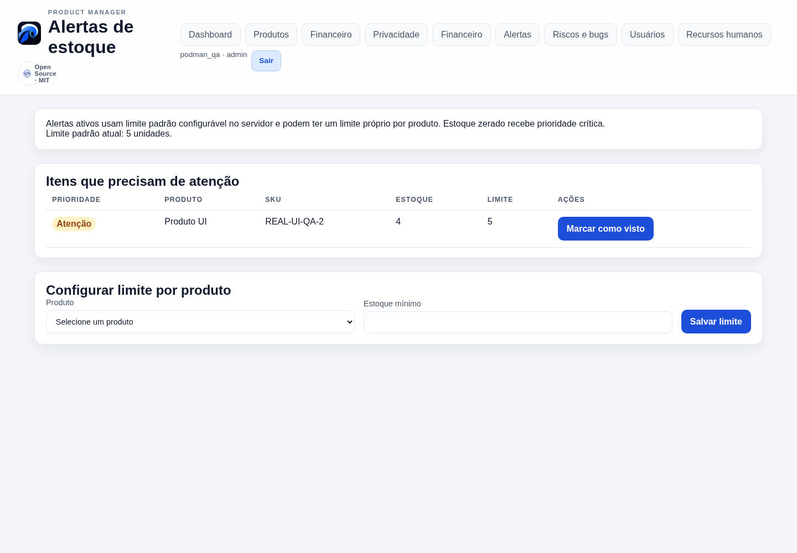
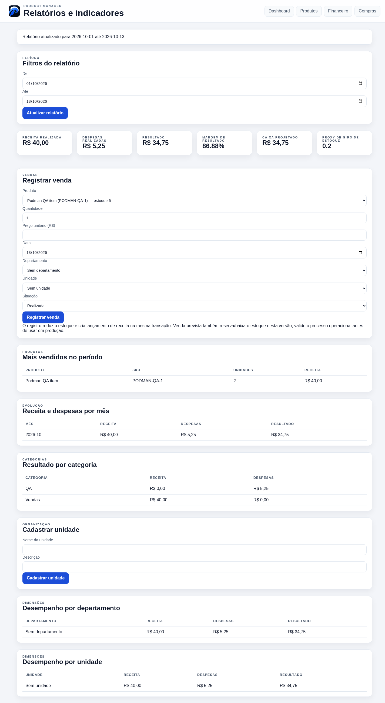
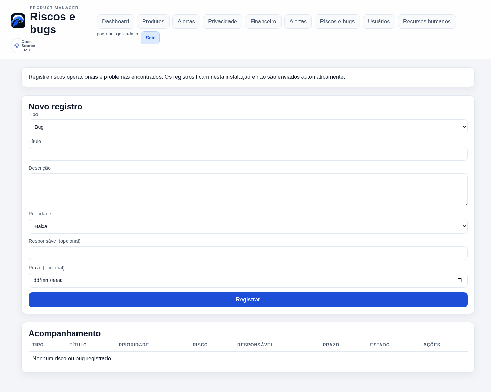
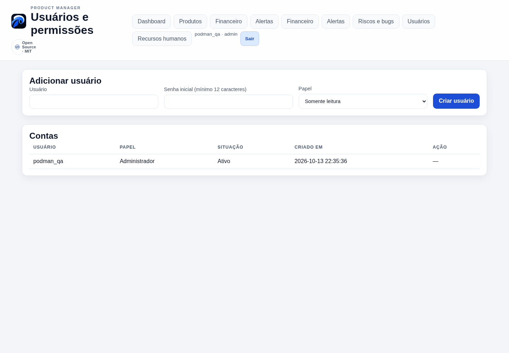
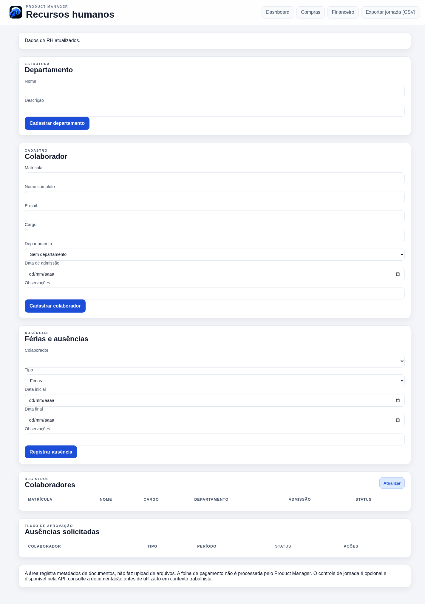

GUIA DE USO · ATUALIZADO EM 13/10/2026
Tutorial visual
Um percurso pelas telas principais do Product Manager. As imagens foram capturadas no container local com dados sintéticos de teste.
1. Primeiro acesso e login
Na primeira execução, use o token de configuração temporário do servidor e crie o administrador. Depois, entre com seu usuário e senha. Não existe senha padrão.

2. Dashboard
Veja contagens, estoque, categorias, clientes recentes e exporte CSV ou XLSX.

3. Produtos e estoque
Pesquise e filtre o catálogo. Cadastre produtos e acompanhe quantidades e situação.

4. Compras e recebimentos
Registre solicitações, cotações, aprovação e pedido. Receba itens em etapas; só a quantidade recebida entra no estoque.

5. Financeiro
Registre receitas e despesas previstas ou pagas. O financeiro é operacional.

6. Alertas de estoque
Consulte níveis baixos, ajuste limites e reconheça alertas.

7. Relatórios
Consulte vendas e indicadores por período. Vendas pagas atualizam estoque e financeiro.

8. Riscos e bugs
Registre problemas e riscos, prioridade, responsável e prazo.

9. Usuários e papéis
Administradores gerenciam contas e papéis de acesso.

10. Recursos humanos
Área exclusiva de administradores para departamentos e registros de pessoal.

Use Sair para encerrar a sessão. Não há cancelamento/estorno rastreável para vendas ou compras nesta versão. Para implantação e recuperação, veja o guia de backup e restauração.